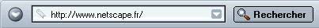
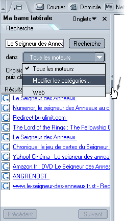
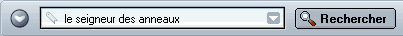
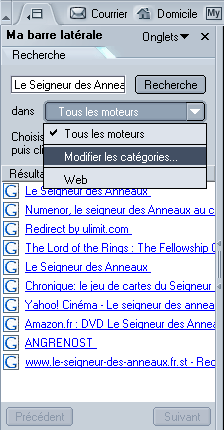

|
|||
| Arrière Avant | |||
Bienvenue dans Netscape ! Netscape est l'un des outils les plus populaires pour naviguer sur le Web. Navigator, le composant Netscape qui vous permet de consulter des pages Web, vous offre une foule de fonctionnalités pour parcourir le Web et effectuer des recherches sur la Toile.
Cette section vous présente Navigator et vous explique comment l'utiliser pour consulter des pages Web, faire des recherches sur Internet et enregistrer des pages.
|
Dans cette section : Navigation à travers les pages web Copie, enregistrement et impression Utilisation de différentes langues et de contenu international |
|
Dans cette section : Affichage de la page d'accueil |
Au démarrage de Netscape, Navigator, votre navigateur, s'affiche. Une page "Nouveautés" s'affiche automatiquement dans la fenêtre du navigateur lors du premier démarrage de Netscape.
Après le premier lancement, votre page d'accueil s'affiche normalement au démarrage de Netscape. A moins de sélectionner une page d'accueil vous-même, votre page d'accueil est choisie par votre administrateur réseau ou fournisseur d'accès à Internet, à moins que la page d'accueil de Netscape ne soit affichée.
Pour sélectionner votre propre page d'accueil, consultez la rubrique Spécification du démarrage de Netscape.
Astuces :
[ Retour au début de la section ]
Vous vous déplacez dans une autre page en entrant son URL (son adresse sur le Web). Les URL commencent généralement par "http://", suivie d'un ou plusieurs noms identifiant l'adresse. Par exemple, "http://netscape.com".
L'icône représentant un cadenas située dans le coin inférieur droit de la fenêtre vous permet de vérifier, à tout moment, l'état de sécurité d'une page Web. Pour plus d'informations à ce sujet, consultez la rubrique Vérification de la sécurité d'une page Web.
Astuce : Pour sélectionner rapidement l'URL dans la barre d'adresses, appuyez simultanément sur les touches Ctrl et L.
|  |
| Barre d'adresses
|
Si vous ne connaissez pas l'URL… Vous pouvez entrer une partie d'une URL, comme "cnn" (for www.cnn.com) ou un terme générique, tel que "cadeaux" ou "fleurs". Navigator devine la page que vous souhaitez visiter ou affiche une page avec une sélection de liens relatifs au terme entré.
Si vous êtes un débutant sur Internet, consultez la rubrique Didacticiel de découverte d'Internet.
[ Retour au début de la section ]
La plupart des pages Web contiennent des liens sur lesquels vous pouvez cliquer pour accéder à d'autres pages.
[ Retour au début de la section ]
Il existe plusieurs manières de revisiter des pages :
| |
|||
| Arrière Avant | |||
| Barre d'adresses |
Astuce : L'onglet Historique de Ma barre latérale permet également de choisir des pages que vous avez visitées au cours des quelques dernières sessions. Pour plus d'informations à ce sujet, consultez la rubrique Ajout d'onglets à Ma barre latérale.
L'historique contient des liens vers les pages visitées récemment. La liste de la barre d'adresses contient les adresses de pages que vous avez saisies dans la barre d'adresses, puis visitées.
Pour accéder à l'historique à partir de Navigator, sélectionnez le menu Aller à, puis choisissez Historique. Pour accéder à la liste de la barre d'adresses, cliquez sur la flèche située à l'extrême droite de cette barre.
Astuce : Pour accéder rapidement à l'historique, appuyez sur les touches Ctrl+H.
Si vous ne souhaitez pas que la barre d'adresses ou l'historique affiche les pages que vous avez visitées, vous pouvez effacer les historiques entièrement ou de manière sélective.
Pour supprimer toutes les pages de la barre d'adresses ou de l'historique à partir de la fenêtre Navigator :
Pour supprimer des pages de manière sélective de l'historique, effectuez l'une des opérations suivantes :
Astuce : Pour trier l'historique, cliquez sur l'une des catégories (Titre, Adresse ou Dernière consultation). Cliquez de nouveau sur le titre pour inverser l'ordre de tri.
[ Retour au début de la section ]
Si une page met trop de temps à s'afficher ou si vous avez changé d'avis et ne souhaitez plus la consulter, cliquez sur le bouton Arrêter.
Pour actualiser la page en cours ou en obtenir la dernière version, cliquez sur le bouton Recharger ou appuyez sur Ctrl+Maj+R (Cmd+Maj+R sous Mac OS).
|
|
|||
|
Recharger
|
Arrêter
|
||
[ Retour au début de la section ]
Les adresses, ou URL, des pages Web peuvent être assez longues et difficiles à mémoriser. Il n'est heureusement pas nécessaire de mémoriser les URL pour naviguer sur le Web. Votre navigateur comprend une liste de signets, qui pointent vers des pages Web intéressantes.
Pour visiter une page référencée, ouvrez la fenêtre Navigator :
Astuce : Pour revenir en arrière, cliquez sur la flèche Précédent.
Vous pouvez enregistrer des signets pointant vers vos pages préférées ou d'autres sites Web intéressants. Pour plus d'informations, consultez la rubrique Création de signets.
[ Retour au début de la section ]
Si vous consultez plusieurs pages Web à la fois, vous pouvez utiliser la fonction de navigation par onglets afin de naviguer de manière plus rapide et plus facile.
Cette option vous permet d'ouvrir plusieurs onglets, chacun contenant une page Web, dans une seule fenêtre Navigator. Il n'est donc pas nécessaire d'ouvrir plusieurs fenêtres pour visiter des pages Web différentes. Cela a pour effet de libérer de l'espace sur votre bureau. Vous pouvez ainsi ouvrir, fermer et recharger des pages Web en toute simplicité, sans devoir basculer vers une autre fenêtre.
Vous pouvez facilement gérer vos onglets de navigation et contrôler leur ouverture automatique. Pour plus d'informations sur la définition des préférences de la fonction Navigation par onglets, consultez la rubrique Préférences de Navigator – Navigation par onglets.
Pour en savoir davantage sur l'utilisation de la fonction Navigation par onglets, consultez la rubrique Navigation par onglets.
[ Retour au début de la section ]
Outre la navigation sur le Web avec Navigator, vous pouvez laisser le Web venir à vous avec Ma barre latérale.
Ma barre latérale est un cadre personnalisable de votre navigateur, permettant de conserver les éléments dont vous avez besoin en permanence (l'actualité et la météo, votre carnet d'adresses ou liste d'amis, les cours de la bourse, un calendrier) et comportant de nombreuses autres options disponibles. Elle vous présente ces éléments dans des onglets continuellement mis à jour.
Netscape est fourni avec quelques onglets prédéfinis dans Ma barre latérale, mais vous pouvez la personnaliser en ajoutant, supprimant et réorganisant des onglets. Pour plus d'informations, consultez la rubrique Ma barre latérale.
Pour afficher un élément dans Ma barre latérale, cliquez sur son onglet.
|  |
Poignée de Ma barre latérale |
Si ce n'est déjà fait, ouvrez Ma barre latérale en cliquant sur sa poignée. Si la poignée n'apparaît pas, ouvrez le menu Afficher de Navigator, choisissez Afficher/Masquer, puis cliquez sur Ma barre latérale dans le sous-menu. |
[ Retour au début de la section ]
|
Dans cette section : Définition des préférences de recherche |
Il existe trois méthodes de recherche rapide : à partir de la barre d'adresses, de Ma barre latérale et de la page de recherche de Netscape.
Rechercher des pages Web sur un sujet particulier est aussi facile que taper une question, ou seulement un mot ou deux, dans la barre d'adresses, comme illustré ci-dessous.

Par exemple, si vous recherchez des informations sur les poupées :
Après une recherche, les résultats sont enregistrés dans l'onglet Recherche de Ma barre latérale jusqu'à la prochaine recherche. Vous ne devez pas cliquer sur le bouton Précédent pour récupérer les résultats de la recherche.
Remarque : Vous pouvez également utiliser des Mots clés Internet pour effectuer une recherche à partir de la barre d'adresses.
L'onglet Recherche de Ma barre latérale permet d'effectuer des recherches rapides et d'en enregistrer les résultats dans des signets. Par exemple, si vous recherchez des informations sur les voitures miniatures :
Remarque : Si l'onglet Recherche de Ma barre latérale contient une liste de moteurs de recherche, cela signifie qu'il est configuré en mode recherche avancée. Vous devrez donc choisir un ou plusieurs moteurs de recherche avant de cliquer sur le bouton Rechercher. Vous pouvez conserver ce mode ou passer à un réglage de base dans les Préférences.
Astuce : Pour afficher rapidement la page précédente ou suivante des résultats de la recherche, cliquez sur le bouton Précédent ou Suivant au bas de l'onglet Recherche de Ma barre latérale.
La page de recherche de Netscape permet de rechercher des mots ou d'explorer des rubriques (telles que Arts et culture, Finance, etc.) susceptibles de vous intéresser. Pour visitez la page Net Search, procédez comme suit :
Netscape vous permet d'effectuer une recherche sur des mots sélectionnés dans une page Web :
Netscape ouvre une nouvelle fenêtre et utilise votre moteur de recherche par défaut pour rechercher les mots que vous avez sélectionnés. Pour savoir comment changer le moteur utilisé pour rechercher les mots que vous avez sélectionnés, consultez la rubrique Préférences de Navigator – Recherche sur Internet.
[ Retour au début de la section ]
Vous pouvez régler l'onglet Recherche de Ma barre latérale en mode avancé, ce qui permet une recherche plus ciblée ou l'utilisation d'un ou plusieurs moteurs de recherche.

Vous pouvez spécifier les moteurs de recherche à utiliser selon les catégories. Par exemple, vous pouvez sélectionner un ensemble de moteurs recherche pour rechercher des voyages et un autre pour rechercher des logiciels.
[ Retour au début de la section ]
Lorsque vous cliquez sur Rechercher, c'est le moteur de recherche Netscape qui est utilisé par défaut. Vous pouvez choisir un moteur de recherche par défaut différent. Vous pouvez également définir l'affichage des résultats de recherche dans Ma barre latérale.
[ Retour au début de la section ]
Les mots-clés Internet peuvent être utilisés avec la barre d'adresses pour vous aider à trouver rapidement des types d'information spécifiques. Vous pouvez utiliser les mots-clés Internet de diverses manières :
Conseil : Les mots-clés Internet les plus courants figurent dans la liste déroulante à gauche de la barre d'adresses. Cliquez sur le triangle et choisissez dans la liste. Pour afficher une liste plus complète de mots-clés, sélectionnez Liste de mots clés.
Important : Pour utiliser les mots-clés Internet, vous devez appuyer sur Entrée sur le clavier (Retour sous Mac OS) au lieu de cliquer sur le bouton Rechercher. La touche Entrée lance la fonction mots clés Internet ; cliquer sur Rechercher lance une recherche.
Pour voir la différence, procédez comme suit :
Si l'entrée de mots-clés Internet dans la barre d'adresses ne fonctionne pas bien, vérifiez que la fonction Mots-clés Internet est activée dans vos préférences Assistants de navigation.
Pour voir la cotation en bourse récente d'une société, entrez "quote", suivi du symbole boursier de la société, et appuyez sur Entrée.
Si vous ignorez le symbole boursier d'une société, entrez son nom. La page Quote (Bourse) affiche toutes les sociétés au nom similaire, parmi lesquelles vous pouvez choisir celle que vous désirez.
[ Retour au début de la section ]
Pour rechercher du texte dans la page en cours de consultation dans Navigator :
Pour rechercher de nouveau le même mot ou la même phrase :
[ Retour au début de la section ]
Pour effectuer une recherche dans la liste des signets, ouvrez la fenêtre Navigator :
Astuce : Pour ouvrir rapidement le menu Signets, appuyez sur les touches Ctrl+B.
Pour rechercher dans l'historique :
Pour utiliser les résultats de recherche :
Astuces :
[ Retour au début de la section ]
|
Dans cette section : |
Pour copier une partie d'une page, ouvrez la fenêtre de Navigator :
Vous pouvez coller le texte dans d'autres programmes.
Pour copier un lien (URL) ou une image utilisée comme un lien à partir d'une page :
Vous pouvez coller le lien dans d'autres programmes ou dans la barre d'adresses de Navigator.
[ Retour au début de la section ]
Pour enregistrer une page entière, ouvrez la fenêtre de Navigator :
Lorsque vous affichez une page contenant des cadres dont l'un est sélectionné, l'option de la liste déroulante Enregistrer le cadre sous est disponible en plus de l'option Enregistrer la page sous. Vous pouvez donc enregistrer uniquement le contenu du cadre sélectionné.
L'enregistrement d'un fichier sur le disque dur permet d'afficher la page (ou son code HTML) sans être connecté à Internet.
Pour enregistrer une image d'une page :
Pour enregistrer une page sans l'afficher (ce qui est utile pour récupérer une page non formatée, comme un fichier de données, qui n'est pas prévu pour l'affichage) :
Important : Certains liens téléchargent et enregistrent automatiquement les fichiers sur le disque dur lorsque vous cliquez dessus. L'URL de ces liens commence souvent par "ftp" ou se termine par une extension de type fichier, telle que "au" ou "mpeg". Ces liens peuvent transférer des logiciels ou des fichiers son ou vidéo et lancer des applications compatibles avec les fichiers.
Astuce : Pour enregistrer une image comme papier peint du bureau de Windows, cliquez sur celle-ci avec le bouton droit de la souris, puis sélectionnez Définir comme papier peint dans le menu contextuel.
[ Retour au début de la section ]
Pour imprimer la page en cours, ouvrez la fenêtre de Navigator :
Pour imprimer le texte sélectionné, ouvrez la fenêtre de Navigator :
La taille de la page imprimée, et non celle de la fenêtre à l'écran, détermine le placement du contenu sur la page imprimée. Le texte et les images sont repositionnés en fonction de la taille du papier.
Pour avoir un aperçu de la page telle qu'elle sera imprimée, vous pouvez utiliser la fonction Aperçu avant impression. Ouvrez la fenêtre de Navigator :
Dans Navigator, ouvrez le menu Fichier et choisissez Aperçu avant impression.
Le mode Aperçu avant impression vous permet d'effectuer les opérations suivantes avec les pages que vous souhaitez imprimer :
 , Précédent
, Précédent  , Premier
, Premier  ou Dernier
ou Dernier  pour vous déplacer entre les différentes pages.
pour vous déplacer entre les différentes pages.Remarque : Certaines fonctions de l'aperçu avant impression sont différentes, voire indisponibles, sous Mac OS et Linux.
Remarque : Certaines fonctions de l'aperçu avant impression sont différentes, voire indisponibles, sous Mac OS et Linux.
Pour personnaliser le mode d'impression des pages dans Netscape, vous pouvez utiliser la fonction de mise en page :
Dans Navigator, ouvrez le menu Fichier et choisissez Mise en page.
La boîte de dialogue Mise en page vous permet de modifier les paramètres suivants pour les pages que vous souhaitez imprimer :
Astuce : Pour avoir un aperçu des modifications effectuées dans la boîte de dialogue Mise en page, utilisez la fonction Aperçu avant impression.
[ Retour au début de la section ]
|
Dans cette section : Sélection de polices et de codages des caractères |
Si vous surfez ou créez, envoyez et recevez du courrier électronique en plusieurs langues, vous devez sélectionner les polices et codages des caractères appropriés.
Une méthode de codage des caractères est la façon dont un document ou un message a été converti en données utilisables par l'ordinateur. Tous les documents Web et messages utilisent une méthode de codage des caractères (également appelée encodage ou jeu de caractères).
La méthode de codage des caractères d'un document dépend de sa langue. Certaines langues, telles que la plupart des langues occidentales, partagent la même méthode de codage. D'autres, telles que le chinois, le japonais et le russe, utilisent d'autres méthodes.
Votre version de Netscape est réglée sur un codage des caractères par défaut approprié pour votre région. Cependant, si vous utilisez plusieurs langues, il peut s'avérer nécessaire de sélectionner des méthodes de codage des caractères appropriées et de désigner les polices correspondantes.
Pour sélectionner les codages des caractères, ouvrez la fenêtre de Navigator :
Les méthodes de codage des caractères sélectionnées sont ajoutées au menu Codage des caractères. Si plusieurs méthodes de codage sont sélectionnées, la méthode active est accompagnée d'une puce (point).
Netscape peut détecter le codage des caractères utilisé par un document et l'afficher correctement. Pour tirer parti de cette fonctionnalité, ouvrez la fenêtre de Navigator :
Pour modifier la liste de jeux de caractères actifs :
Pour changer les polices par défaut dans un groupe de langues :
De nombreux auteurs de pages Web sélectionnent leurs propres polices et tailles. Vous pouvez utiliser les paramètres de police des auteurs en sélectionnant "Autoriser les documents à utiliser d'autres polices".
Pour régler la lisibilité des polices, sélectionnez dans la liste déroulante la résolution d'affichage des pages Web en points par pouce (dpi). Sélectionnez "Autres" pour ouvrir la boîte de dialogue Etalonner la résolution, qui permet d'étalonner la résolution en mesurant la longueur d'une ligne à l'écran.
[ Retour au début de la section ]
La langue utilisée pour Netscape affecte le texte des boutons, boîtes de dialogue, menus, outils et autres éléments. La fonctionnalité de ces éléments reste inchangée.
Pour définir votre langue de prédilection :
Remarque : Vous devez redémarrer Netscape après avoir changé votre langue de travail.
L'élément de contenu utilisé affecte la page d'accueil, les signets, le contenu de la barre d'outils, Ma barre latérale et d'autres éléments.
Pour utiliser un élément de contenu :
Remarque : Il est nécessaire de redémarrer Netscape après un changement d'élément de contenu.
Astuce : Pour télécharger d'autres modules de contenu ou de langue, cliquez sur Télécharger plus.
Les pages Web sont parfois disponibles en plusieurs langues. Si elle est disponible, Netscape présente les pages dans la langue de votre choix. Vous pouvez sélectionner les langues d'affichage par ordre de préférence.
Pour définir les préférences linguistiques :
Remarque : Les codes de deux lettres entre crochets apparaissent à côté de chaque langue de la liste. Il s'agit des abréviations standard des langues. Pour obtenir la liste complète des codes, consultez le document en ligne intitulé Codes for the Representation of Names of Languages.
[ Retour au début de la section ]
Pour plus d'informations sur Netscape en plusieurs langues, consultez le document en ligne intitulé Page des utilisateurs internationaux.
[ Retour au début de la section ]
Navigator peut prendre en charge de nombreux types de fichiers. Cependant, pour traiter certains fichiers, tels que la musique ou les films, Navigator a besoin de modules externes ou applications auxiliaires. Même si ces modules ou applications ne sont pas installés, Netscape est en mesure d'enregistrer le fichier sur votre disque dur. Lorsque vous enregistrez des fichiers, vous pouvez en opérer le suivi grâce au Gestionnaire de téléchargement.
Les modules externes sont des applications auxiliaires qui étendent les fonctionnalités de Navigator et s'exécutent dans Netscape. L'utilisation de modules externes tels que Sun Java, Macromedia Flash et RealNetworks RealPlayer permet à Netscape d'afficher des fichiers multimédia et d'exécuter de petites applications, comme des films, des animations et des jeux.
Lors de l'installation de Netscape, le système vous a offert la possibilité d'installer quelques-uns de ces modules externes. Vous n'êtes pas obligé de les installer séparément. Sachez que vous pouvez également ajouter des modules après avoir installé Nestcape. Pour consulter la liste des modules externes déjà installés, consultez la page Web en ligne du Netscape Plug-in Manager.
Pour consulter la liste de tous les modules externes qu'il est possible d'installer dans Netscape, rendez-vous à la page Browser Plug-ins sur le site Web de Netscape.
S'il s'avère impossible d'utiliser des fichiers dans Netscape, vous avez la possibilité de lancer des applications auxiliaires qui s'exécutent en dehors de Netscape. Ainsi, pour lire des fichiers MP3, vous pouvez ouvrir des programmes externes tels que Winamp.
Les paramètres de la section Applications auxiliaires des préférences indiquent à Navigator les applications auxiliaires à utiliser sur l'ordinateur. En règle générale, ces préférences ne doivent pas être modifiées car elles sont prédéfinies. En outre, si Navigator ignore quelles applications auxiliaires utiliser, il vous permet d'en trouver une dans la boîte de dialogue de téléchargement.
La boîte de dialogue de téléchargement propose les options suivantes :
Astuce : Vous pouvez effacer les options enregistrées pour "Toujours demander avant d'ouvrir ce type de fichier" dans les préférences. Pour plus d'informations à ce sujet, consultez la rubrique Préférences d'Instant Messenger – Applications auxiliaires.
Pour optimiser les préférences des applications auxiliaires (pour les utilisateurs expérimentés) :
Pour ajouter une application auxiliaire à la liste :
Pour spécifier la gestion par Navigator des fichiers téléchargés :
Pour supprimer un élément de la liste :
Pour plus d'informations sur les préférences des applications auxiliaires, consultez la rubrique Préférences de Navigator – Applications auxiliaires.
Le Gestionnaire de téléchargement vous permet de garder la trace des fichiers téléchargés. Ce gestionnaire affiche les informations suivantes :
Pour ouvrir le Gestionnaire de téléchargement, procédez comme suit :
Les options de menu suivantes sont disponibles dans le Gestionnaire de téléchargement :
[ Retour au début de la section ]
Remarque : Cette section porte sur des paramètres et fonctions disponibles uniquement dans Windows.
Netscape est un outil très prisé pour l'affichage de pages Web, que ce soit sur Internet ou sur votre ordinateur. Pour ouvrir aisément des pages Web, vous pouvez faire en sorte que Netscape devienne votre navigateur par défaut.
En faisant de Netscape votre navigateur par défaut, vous pourrez ouvrir automatiquement des protocoles et formats de fichier utilisés couramment sur Internet. Voici un aperçu de ces fichiers et protocoles Internet :
Fichiers image :
JPEG, GIF, PNG et MNG
Fichiers de langage et de document Internet :
HTML, XML, XHTML et XUL
Protocoles Internet :
HTTP, HTTPS, FTP, Chrome, Gopher
Une fois l'installation terminée, Netscape vérifie s'il est le navigateur par défaut pour les protocoles ou formats de fichiers Internet courants. S'il ne l'est pas, le système vous pose la question suivante : "Netscape n'est pas actuellement défini comme votre navigateur par défaut. Souhaitez-vous en faire votre navigateur par défaut ?"
Cliquez sur Oui pour faire de Netscape votre navigateur par défaut. Si vous cliquez sur Non, cette question vous sera posée à chaque fois que vous lancerez Netscape, à moins que vous n'ayez désactivé la case à cocher "Vérifier au prochain démarrage aussi".
Si vous désactivez la case à cocher "Vérifier au prochain démarrage aussi", vous aurez toujours la possibilité de faire de Netscape votre navigateur par défaut en modifiant vos paramètres dans les Préférences. Pour savoir comment faire de Netscape votre navigateur par défaut en utilisant le panneau des préférences, consultez la rubrique Préférences de Navigator – Navigator.
Vous pouvez personnaliser manuellement le traitement réservé par Nestcape à différents protocoles et formats de fichier. Pour plus d'informations, consultez la rubrique Préférences avancées – Système.
[ Retour au début de la section ]
Lorsque vous affichez une page Web, Netscape charge (démarre) automatiquement plusieurs fonctions contribuant à interpréter les pages Web. Ces fonctions, Java et JavaScript, peuvent rendre les pages Web plus attrayantes, mais leur chargement plus long.
Pour savoir comment désactiver Java, consultez la rubrique Préférences avancées – Avancé.
Pour savoir comment désactiver JavaScript, consultez la rubrique Préférences avancées – Scripts & Windows.
[ Retour au début de la section ]
Votre ordinateur stocke des copies des pages fréquemment visitées dans la mémoire cache. Cela évite à l'ordinateur de devoir récupérer la page du réseau à chaque affichage.
Pour définir la taille de la mémoire cache ou la vider (Windows et Unix uniquement) :
Important : Une mémoire cache plus volumineuse permet de récupérer rapidement davantage de données. Cependant, à moins que la mémoire de votre ordinateur soit très importante, 1 024 Ko est suffisant.
Pour définir la taille de la cache sur disque ou la vider :
Important : Une mémoire cache sur disque plus volumineuse permet de récupérer rapidement davantage de pages, mais occupe davantage d'espace sur le disque dur.
Lorsque vous quittez Netscape, il assure la maintenance de la mémoire cache. Si vous estimez qu'elle prend trop de temps, essayez de réduire la taille de la mémoire cache sur disque.
Pour spécifier la fréquence de vérification par Navigator des révisions de page sur le réseau (pour ne pas conserver trop longtemps des pages obsolètes dans la mémoire cache) :
Si des pages devant se trouver dans la mémoire cache prennent un temps excessif pour s'afficher, vérifiez que la préférence n'est pas réglée sur "Chaque fois que je visualise la page" dans la mesure où la vérification nécessite une connexion réseau.
Pour rafraîchir une page à tout moment :
[ Retour au début de la section ]
Netscape peut vous informer de la disponibilité de mises à jour de votre logiciel et les installer automatiquement. Netscape peut également vous informer de la disponibilité d'une nouvelle version du programme.
Pour plus d'informations sur la configuration de l'installation automatique du logiciel, consultez la rubrique Préférences avancées – Installation du logiciel.
[ Retour au début de la section ]
Si vous utilisez une souris à roulette, vous pouvez en définir les fonctions dans Netscape.
Pour plus d'informations sur la configuration d'une souris à roulette, consultez la rubrique Préférences avancées – Roulette de la souris.
[ Retour au début de la section ]
Remarque : Quick Launch n'est disponible que sur les versions Windows de Netscape.
Quick Launch réduit le temps nécessaire au démarrage de Netscape. Lorsque Netscape utilise Quick Launch, l'icône du logo de Netscape est présente dans la barre des tâches (près de l'heure).
| |
| Icône de Netscape Quick Launch
|
Astuce : Pour démarrer rapidement des composants (tels que Composer, Messagerie & Forums et la fenêtre Carnet d'adresses), cliquez avec le bouton droit de la souris sur l'icône du logo Netscape et sélectionnez le composant dans le menu contextuel.
Lors de l'installation de Netscape, vous avez eu la possibilité de choisir entre l'activation ou la désactivation de Quick Launch. Si cette option est activée, Quick Launch charge une partie de Netscape en mémoire lors du démarrage initial de Windows (et à chaque fois que Netscape est exécuté). Quick Launch permet à Netscape de rester en mémoire après la fermeture de toutes les fenêtres Nestcape. Cela se traduit par un démarrage rapide de Netscape lorsque vous en avez besoin, sans qu'il faille charger tous les composants de Netscape. Si la mémoire de votre ordinateur est saturée, vous pouvez désactiver Quick Launch afin d'économiser la mémoire.
Pour activer ou désactiver Quick Launch dans Netscape :
Astuce : Pour désactiver aisément Quick Launch, cliquez avec le bouton droit sur l'icône du logo de Netscape dans la barre des tâches (près de l'heure) et sélectionnez "Désactiver Quick Launch" dans le menu contextuel.
[ Retour au début de la section ]
|
Dans cette section : |
Cette section vous explique comment utiliser des proxies.
De nombreuses sociétés bloquent l'accès depuis Internet à leurs réseaux. Cela évite que de tierces parties accèdent à des informations confidentielles. Cette protection est appelée un pare-feu.
Si votre société possède un pare-feu, le navigateur doit probablement passer par un serveur proxy pour vous connecter à Internet. Le serveur proxy empêche les intrus de pénétrer dans le réseau privé de la société.
Avant de commencer :
Pour configurer le navigateur pour le fonctionnement avec le serveur proxy :
Les noms de domaine sont la partie d'un URL contenant le nom d'une organisation, d'une société ou d'une faculté, comme netscape.com ou washington.org. Si vous utilisez des noms d'hôtes locaux sans nom de domaine, énumérez-les de la même manière. Utilisez des virgules pour séparer les noms d'hôtes. Le caractère générique [*] ne peut pas être utilisé.
Pour plus d'informations sur le panneau des préférences Proxies, consultez la rubrique Préférences avancées – Proxies.
[ Retour au début de la section ]
20 juin 2002
Copyright © 1994-2002 Netscape Communications Corporation.